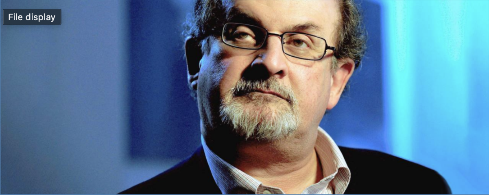

"Es gibt keine russichen Soldaten auf ukrainischen Boden"
- Wladimir Putin welt.de
Der Messerangriff auf den Schriftsteller Salman Rushdie hat weltweit Entsetzen ausgelöst: Die US-Regierung und UNO-Generalsekretär Antonio Guterres zeigten sich bestürzt. Die USA und die Welt seien Zeugen eines „verwerflichen Angriffs" geworden, erklärte der Nationale Sicherheitsberater von US-Präsident Joe Biden, Jake Sullivan, am späten Freitagabend (Ortszeit). „Diese Gewalttat ist entsetzlich."
Angriff auf Rushdie
Die ÖVP-nahe Schülerunion hat einen neuen Bundesobmann. Der 21-jährige Wiener Manuel Kräuter wurde beim 50. ordentlichen Bundestag der Organisation mit 98,26 Prozent zum neuen Bundesobmann gewählt, teilte die Schülerorganisation heute in einer Aussendung mit. An seiner Seite steht die Vorarlbergerin Laura
Die Entwicklung der CoV-Infektionen ist derzeit nicht prognostizierbar. Dafür sind die Testzahlen zu niedrig. Um für de weiteren Verlauf der Pandemie vorbereitet zu sein, muss die Politik sich jetzt auf eine Teststrategie festlegen, fordert Simulationsforscher Niki Popper
Auch Polen erwägt, die Regeln für die Visavergabe für russische Staatsbürger einzuschränken. „Polen arbeitet an der Entwicklung eines Konzepts, das es ermöglicht, keine Visa für Russen zu erteilen", sagte Vizeaußenminister Piotr Wawrzyk am Sonntag der Nachrichtenagentur PAP. Die Entscheidung darüber werde in den kommenden ochen fallen.
"Es gibt keine russichen Soldaten auf ukrainischen Boden"
- Wladimir Putin welt.de
ORF-Zentrum
Würzburggasse 30
1136 Wien